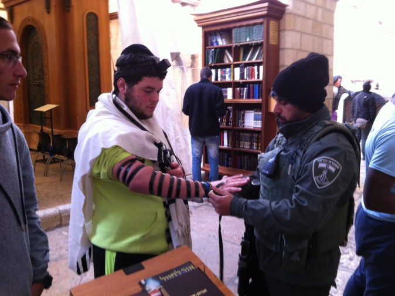

The Campaign That Changed The World
“Hey buddy, like to put on tefillin?” “ Dear Jew, did you put on tefillin yet today ?”

Young yeshiva bachurim, married men and even elder Chassidim with their flowing white beards, address themselves to the soul of the rugged sabra, stopping him in the middle of his rushing about and sincerely importune him for two minutes of his time to put on tefillin.
It’s not always easy. Sometimes, it’s a wintry, rainy day so you would need to take off your jacket and roll up the sleeves of a sweater and shirt. Sometimes, the person is rushing to the bank before it closes or laden with baskets full of produce after shopping in the market. Every Lubavitcher Chassid is aware of this and nevertheless, the hearts of the Jewish people are alert to do a mitzva.
THE SEGULOS OF TEFILLIN
Fifty plus years have passed since the Tefillin Campaign began, when the Rebbe asked to utilize the tremendous inspiration of the Jewish people in a practical way: “The perpetual responsibility and privilege that lies upon every single Jew to draw other Jews to Judaism exists now in even greater measure, especially in the matter of donning tefillin, since the time calls for this as the segula of ‘and all nations of the earth will see that the name of G-d is called upon you and will fear you’ is still needed. According to Chazal, this refers to tefillin.”
On many occasions, the Rebbe repeated and emphasized the special importance at this fateful time to put on tefillin and bring merit to brethren distant from the mitzva of tefillin, both as a segula for the nation’s success in war and as an impetus by which to bring the masses to a hands-on connection to Hashem and His Torah.
The first time the Rebbe made a public announcement to every Chabad Chassid to go out to the street and put tefillin on with Jews was on Shabbos, parashas Bamidbar 5727/1967. At that farbrengen, he announced that tefillin is a segula for long life:
“When Hashem leads a war: 1) the enemy is entirely obliterated. 2) ‘No man is missing’ for all remain whole, and the segula for this is the mitzva of tefillin about which the Gemara explains: 1) ‘Whoever puts on tefillin lives long.’ 2) ‘And all the nations of the earth will see that the name of G-d is called upon you and will fear you’ – this refers to the tefillin of the head.”
“Therefore,” the Rebbe continued, “1) When those who are in the army put on tefillin, they will impose fear on all enemies of Israel and will dispense with the war. 2) Every Jew who puts on tefillin in the merit of the soldiers, helps them to long life and that their fear will fall upon all the nations around.”
In those prewar days, these words of the Rebbe served to encourage the entire Jewish people. As soon as Shabbos was over, the sicha was publicized in Eretz Yisrael and the world. A telegram was sent to Rabbi Yisrael Leibov, director of Tzeirei Chabad in Eretz Yisrael and to the director of activities, Rabbi Yitzchok Gansbourg: “At the farbrengen today, the Rebbe emphasized Menachos daf 35b that tefillin impose fear, ‘the chieftains of Edom were shaken,’ etc. The effort of the Tefillin Campaign pertains to all Jews, that one should give merit to another.”
THE TEFILLIN CAMPAIGN GETS UNDERWAY
The instruction reached Eretz Yisrael the morning of Sunday, 25 Iyar and the campaign began that day. The war broke out the next day, 26 Iyar. Many Chassidim sensed that the Rebbe’s campaign was meant to provide the spiritual cure for the war that all feared.
On Tuesday, Rabbi Efraim Wolf reported to the Rebbe about the initial implementation of the Tefillin Campaign in Eretz Yisrael:
“Upon receiving the telegram from Tzach about giving others the merit of putting on tefillin, as the Rebbe spoke about at the farbrengen on Shabbos Mevorchim, many of Anash and talmidim of the yeshiva are putting tefillin on with soldiers in our area and also with passersby. Most of them are very willing to put on tefillin.”
On 28 Iyar, R’ Zushe Partisan wrote to the Rebbe on behalf of the Vaad Kfar Chabad about the situation with the mosdos and he also described the Tefillin Campaign: “All residents of the Kfar and talmidim in the mosdos are healthy and whole, and in high spirits without any apprehensions. The draftees will surely with G-d’s kindness return to their families whole and healthy.
“These days, we have seen in a tangible way, along with our fellow Jews, that ‘the right hand of G-d deals valiantly.’ Anash have participated in the Tefillin Campaign energetically.” He signed off the letter, “those asking for blessing and guidance and ‘raise up the might of Your people Yisrael and raise up the might of Your anointed one.’”
That day, 28 Iyar, eastern Yerushalayim was captured, and the Kosel HaMaaravi, the place that Jews yearned for throughout the generations, was liberated. However, it was still not possible to approach the Wall due to mines that were spread in the border area over the years. Despite this, a few could not patiently wait and they sneaked in and went to the Kosel. Among them was Rabbi Benzion Grossman who went there every day with a few Chassidim and lay tefillin with soldiers on guard.
“The soldiers were excited about the conquering of the Kosel,” R’ Grossman said, “and the thirst for prayer was enormous. Many soldiers stood on line to put on tefillin. We read Shema with them and the tefillin immediately went to the next soldier.”
On 21 Sivan, the Rebbe told Tzeirei Chabad in a telegram to set up a “perpetual booth to put on tefillin” at the Kosel. That same day, Rabbi Chadakov sent a letter explaining what was stated briefly in the telegram.
“The Rebbe’s suggestion is if at all possible to arrange a perpetual structure at the Kosel for putting on tefillin, of course, with the permission of the appropriate authorities. It would be worthwhile printing a small version of the blessings for tefillin and the Shema and to give it out for free. And also to sell properly checked tefillin there at minimal cost.
“As far as a permit, even if it is seemingly unnecessary now to acquire a special permit, it is worth getting one so they will not be able to object, and mainly so that those who oppose out of jealousy not get any ideas to find excuses etc. It would be good and proper if you can also distribute some brochure there that explains the importance of putting on tefillin, and of primary importance is to add there (perhaps within the aforementioned text of the blessings on the tefillin) that this obviously does not exempt one from saying the blessings of Shema and tefilla in general …
“Obviously, it would be good to have siddurim, Tehillim (small size), Tanya on hand and there must be kippot …”
Upon the arrival of the telegram at Tzeirei Chabad, R’ Leibov decided to send some senior Chassidim from Kfar Chabad to the Kosel. Every morning, three elder Anash traveled from Kfar Chabad to the Kosel where they put tefillin on with people every day for five to six hours. R’ Leibov himself considered it a great privilege and joined in putting tefillin on with people at the Kosel.
Only a week went by and a sharply worded telegram was sent from the Rebbe’s secretariat to Tzeirei Chabad in Yerushalayim, then led by Rabbi Tuvia Blau:
“Has anything been done regarding the Tefillin Campaign by Tzach and Anash of Yerushalayim? How many people were involved and how many hours did they dedicate to this, all of them together? It would be good of them to send a telegram with the details and the names of the participants in an express letter. Clearly, any exaggeration in such a matter is prohibited…”
This sharp telegram immediately woke Anash of Yerushalayim from their torpor as R’ Blau recounted:
“As soon as the telegram was received, we launched a base of operations that organized the Chabad Chassidim in Yerushalayim for the Tefillin Campaign throughout all hours of the day near the Kosel. Each one devoted several hours a week and throughout the day there were shifts.
“As the Rebbe instructed us, we immediately sent a detailed weekly report but received no response. The surprising reaction came on the second night of Succos 5728, a few months after the start of the campaign. Somehow, I sneaked into the meal that took place with the Rebbe and the elder Chassidim in the Rebbe Rayatz’s apartment. I stood on the side and hoped they would let me stay.
“During the meal, the Rebbe instructed those present to say l’chaim and I was fearful since I hadn’t been invited to the meal … Suddenly, the Rebbe said, with divine inspiration, ‘Blau is uncertain about whether to say it; he should say l’chaim’. Rabbi Shmuel Levitin, who was one of the guests, immediately asked whether I am related to Rabbi Amram Blau. The Rebbe responded with surprise, ‘Don’t you know who he is? He had a brother who learned here in yeshiva!’ The Rebbe added, ‘He is running the Tefillin Campaign at the Kosel where they have already laid tens of thousands of tefillin …’
“To me, this was an utter surprise. This was an amazing and moving response of the Rebbe to the Tefillin Campaign taking place at the Kosel.”
JUST A HUNDRED THOUSAND?
In those early days of the Tefillin Campaign, estimations were publicized that about 100,000 Jews and military personnel, who were not yet observant, had put on tefillin as a result of the campaign, during the period that the war was being fought.
One interesting conversation on the topic took place at the Shavuos meal, between the Rebbe and his brother-in-law Rashag.
Rashag: They are saying that about 100,000 Jews – so may they increase – put on tefillin.
The Rebbe: Only one hundred thousand?
Rashag: I mean to say that in addition to those who always put on tefillin, an additional one hundred thousand Jews put them on during this period.
Interestingly, the media in Israel would publish from time to time during those summer months, estimations of how many Jews already put on tefillin near the Kosel HaMaaravi; 400,000, 600,000, etc. From the data that came into the headquarters for the Tefillin Campaign in those days, it appeared that about a year after the campaign had begun, the average daily number of those putting on tefillin was around three thousand, and the total number of Jews who had done so near the Kosel had hit one million Jews!
THE MORE THAT WILL PUT ON TEFILLIN,
SO WILL THE CASUALTIES LESSEN
News of the campaign somehow reached those Chabad Chassidim who were engaged in battle, and they hurried to take advantage of the momentum of the awakening of Jewish hearts, and they offered their fellow soldiers and combatants to put on tefillin, citing that this was a segula to impose fear upon the enemy.
One particularly moving story is that of R’ Dovid Morozov of Kfar Chabad, who was in combat on the front with Egypt. It was on Friday, 29 Sivan 5727, when he gathered all the members of his unit on the banks of the Suez Canal, among them kibbutzniks and moshavniks who had never prayed in their lives, and he convinced all of them to put on tefillin. They all responded in the affirmative and put on tefillin one after the other.
The next day, Shabbos morning, he went out on a reconnaissance mission from which he did not make it back alive. He was hit by enemy fire and killed, may Hashem avenge his blood. When the members of his unit came to offer condolences to his widow, they informed her that they had made a resolution to continue keeping the mitzva of tefillin in remembrance of her husband.
What is truly amazing, is the fact that even before the war, Avraham Hertzfeld, a member of Knesset from Mapai (the party of Ben-Gurion) visited the Rebbe. When he entered the yechidus room, the Rebbe greeted him with a question, asking why he looked so worried. Hertzfeld answered that he does not understand the question, since everybody knows that a tough war was about to break out, “And who knows what will be the fate of the Jewish nation?”
The Rebbe looked him straight in the eye and answered, “If war is already an unavoidable fact, so why are they waiting?” Hertzfeld responded that the matter was not so simple and the concern was great. In response to his words, the Rebbe made a dismissive motion with his hand and said, “Am Yisrael will experience a great victory.” Later on, he got up the nerve to ask the Rebbe how many soldiers would die. The Rebbe answered him with no ambivalence, “It all depends on tefillin. The more soldiers that put on tefillin, so will the cost in blood get smaller.” This statement was publicized in an article that appeared in the media in those days, and it caused a tremendous awakening.
THE ACCLAIMED GENERAL SETS A PERSONAL EXAMPLE
If anyone thought that since the Rebbe’s Tefillin Campaign was meant to instill fear in the enemy, and therefore, the campaign would stop after the war, this was not the case. On the contrary, right after the war, the Rebbe announced the continuation of the Tefillin Campaign and on a much broader scale. The Rebbe made this clear in letters that he wrote at the time as well as with special instructions via the secretaries.
In the middle of the winter of 5728, someone asked the Rebbe why the campaign should continue after the war. The Rebbe’s answer (volume 25, pages 71-72) was clear:
1-The army of enemies stands on their border on all sides at the ready etc. may it not come to pass, and only fear is a deterrent…
2-The danger of “from the north will develop etc.” r”l, [alluding to the threat from the USSR] is far greater than ever although there is no point in frightening Jews, just to urge and encourage them by saying that it all depends on teshuva and good deeds which is in the hand of each individual, especially the mitzva that instills fear etc.
In this letter and the letter that follows it, the Rebbe goes on to explains this at length.
In one of the letters that the Rebbe wrote in the middle of Sivan, he added a handwritten note in the margin that said: “I just received the letters from 10 and 11 Sivan; many thanks for the good news about the Tefillin Campaign.”
The Rebbe demanded reports from all the shluchim in Eretz Yisrael with updates about the Tefillin Campaign. He continued to urge the participation in the Tefillin Campaign throughout the summer and in the years to come.
As a king who leads the charge in battle, the Rebbe himself encouraged the participants in the campaign as well as those who put on tefillin and he sent them encouraging letters. For example, this is a letter that the Rebbe wrote in Elul 5727 to members of the police department in Afula (letter #9366):
“I was pleased and very happy to receive the letter from Rabbi Yitzchok Yadgar about his visit to you in connection with the lofty mivtza, ‘The Tefillin Campaign,’ and his impressions of the gracious greeting with which he was welcomed and your participation etc. May the merit of this mitzva, which has a unique segula to it, as it says, ‘and all the nations of the earth will see that the name of G-d (in the tefillin scrolls) is called upon you and will fear you’ will stand by you for additional success in your important and responsible work to establish and strengthen law and order in all places under your supervision. May you be blessed in all your personal matters, as an additional significant segula and special merit in this mitzva is that whoever puts on tefillin lengthens his days, length in quantity and also in quality …”
The Rebbe himself participated in the Tefillin Campaign when he directly asked some people to strengthen their commitment in putting on tefillin, especially people in the military to whom he also sent a gift, a pair of tefillin. The Rebbe also asked anyone who had the ability to be influential and urged them about the campaign. For example, the Rebbe wrote a rare expression to the author Mr. Eliezer Steinman (letter #9657), “Surely you know az ich koch zich in (I am cooking in, i.e. I am passionate about) the Tefillin Campaign … Perhaps you can devote a special article to this.”
The tefillin stand at the Kosel also kicked into higher gear after the war and from then until today, the stand has been a magnet for hundreds of thousands of Jews who visited the Kosel. One of them was General Ariel Sharon who went to the Kosel a few days after the end of the war. Sharon was then considered a national hero and his visit to the Kosel generated a lot of excitement. At the time, Rabbi Aharon Rabinowitz, a Lubavitcher from Yerushalayim, was at the stand and he suggested that Sharon put on tefillin. He readily agreed. The photographers from the media who accompanied Sharon immortalized the moment. The sight of Sharon wearing tefillin as a proud Jew made a tremendous impression on those present.
R’ Moshe Prager described the event in the Bais Yaakov journal:
“When General Arik Sharon came, escorted by senior officers of the IDF and guests from abroad, to the Kosel plaza, he immediately drew the attention of those present. Rabbi Aharon Rabinowitz went over to him and suggested that he do the mitzva of putting on tefillin, which is a segula for instilling fear in our enemies. General Sharon immediately agreed to join this campaign and the rabbi chose a special pair of tefillin, mehadrin sh’b’mehadrin. After R’ Rabinowitz put the tefillin on the arm and head of Arik Sharon, the entire crowd, together with the general, recited the Shema seven times. Sharon later said that he had not put on tefillin since his bar mitzva.”
One of the people who was very impressed by this scene was Rabbi Chaim Gutnick of Australia who was visiting Eretz Yisrael at the time. A short while later, R’ Gutnick was in Crown Heights and when he had yechidus, he told the Rebbe about it.
The Rebbe greatly appreciated the public Jewish tribute on the part of of the general and expressed this in the condolence letter he sent him some time later, upon the tragic passing of Sharon’s son, “Another point that led me to write this letter to you is the great awakening that his honor generated in the hearts of many of our Jewish brothers by putting on tefillin near the Kosel HaMaaravi, which also received publicity and made a great impact and an extremely positive one among various segments of the nation and in places near and far.” (Igros Kodesh volume 25, p. 4).
GEDOLEI TORAH JOIN THE REBBE’S CALL
Over time, the awakening spread throughout the land. In a rare fashion, gedolei Yisrael in Eretz Yisrael publicized a supportive proclamation regarding the campaign and issued a call to join the Tefillin Campaign. The proclamation was signed by the great Admorim, rabbanim, and roshei yeshivos. An additional proclamation that appeared later, was signed by three of the senior Litvishe leaders of the time: Rabbi Yechezkel Abramsky, Rabbi Avraham Joffen, rosh yeshiva of Beis Yosef, and Rabbi Yechezkel Levenstein, mashgiach in Yeshivas Ponevezh.
Two years after the announcement of the Tefillin Campaign, the Rebbe said that the reasons for the campaign were still in force and even more vital, “… the current situation is such that what is needed is not only for the nations of the earth to fear, a fear engendered by the mitzva of tefillin, but also, there is a need for what is stated in the well known halacha as the Rosh writes, “… as a result of the fulfillment of the mitzva of tefillin and the fixing of them, will be fulfilled in the men of war ‘and he tears the arm (of the enemy) and also the head.’” This is what the Rebbe wrote in a letter that he sent on motzoei Shabbos parashas Vaeschanan 5729, which he said should be publicized around the world.
Three years after the campaign began, on Lag B’Omer 5730/1970, there was a festive parade in front of 770. The Rebbe addressed the thousands of children and adults there and said: Since we have seen since Lag B’Omer of three years ago, when we spoke about G-d’s promise in His Torah, “and I will give peace in the land,” “and and you will dwell securely in your land,” and we proclaimed an increase in the mitzva of putting on tefillin, this saved thousands and tens of thousands of Jews who are alive till this day, and they should live long days and years.
As for why the mitzva of tefillin was chosen as a campaign, the Rebbe explained that this was because it is a “comprehensive mitzva” as our Sages said that “the entire Torah is compared to tefillin,” and the mitzva of tefillin is one of the first mitzvos that our ancestors accepted upon themselves in Mitzrayim.
THE REBBE IS PLEASED WITH THE OPPOSITION
As expected, just like every other campaign launched by the Rebbe, opponents and those who seek conflict rose up in opposition and attacked the Rebbe for the new innovation. Just a few days after the campaign began, the Rebbe himself spoke about how “I received a sharp letter in connection with what I encouraged in regards to tefillin. The Rebbe explained that “it is the call of the hour to be involved in this, in order that it be fulfilled that he will live long etc., ‘and all the nations of the earth will see that the name of G-d is called upon you and will fear you, these are the tefillin of the head.’”
For a long time, the Rebbe avoided responding to the arguments leveled against him, and it was only half a year later that the Rebbe announced that he decided to answer the complaints. The first time that the Rebbe did so in public was at the farbrengen of Shabbos Bereishis 5768. The Rebbe said that these complaints are very encouraging, since every holy matter that is revealed in the world arouses opposition against it. And if this were not the case, it would actually worry him a great deal. After that introduction, the Rebbe addressed the points one by one.
One of the main points that the Rebbe emphasized in connection with the Tefillin Campaign is that this is not a novelty of Chabad, but it is an explicit law in Shulchan Aruch that there is a mitzva of “rebuke, you shall rebuke your fellow,” which includes in it the mitzva of Ahavas Yisrael. Just because Lubavitch conducts itself according to the Shulchan Aruch, there needs to be arguments against them?
The opposition was from mitzva observant Jews and also from those who were not. This is apparent from a rare letter that the Rebbe sent to Mr. Avraham Livneh (Steinman), dated 2 Tammuz 5730. There the Rebbe thanks him for going out to defend his honor against those who attacked him in the media about the Tefillin Campaign:
“I will use this opportunity to express my gratitude in that he defended me from the main editorial that was published in Ha’aretz, especially as my honor is not so relevant in this matter, since I am quite used to such ‘responses’ and even sharper ones from my youth, when I lived in the Soviet Union and was the eldest son of the regional rav. Since I had acquaintances from among the students etc., it is understood that when there were debates etc., they would ‘also’ attack me personally. And all the more so since I had knowledge in the fields being studied by the aforementioned students, who also included Yevsekis, communists, and so on. But what is of concern to me is the spreading of Judaism, and first and foremost, the Tefillin Campaign.”
There were also many observant Jews who raised various arguments against the campaign, some of them halachic in nature. As the Rebbe himself revealed, “The questioner asked, how is it possible to put on tefillin for such a reason etc., being that there is a Rambam that paskens the opposite (regarding mezuza), that ‘those who write the names of angels inside the mezuza… they are in the category of those that have no share in the World to Come, as these fools, it is not sufficient for them that they invalidated the mitzva, but they made a great mitzva… a talisman for their own benefit etc.’”
The Rebbe recounted this to his brother-in-law Rashag during the Shavuos holiday meal in the apartment of the Rebbe Rayatz, and promised that, “in the evening this will be spoken about…” The Rebbe did explain the topic at the subsequent farbrengen, and continued to explain the topic in the weeks that followed.
As R’ Yaakov Shnur of Yerushalayim, who also took part in the combat operations, summed it up in an interview:
“Before the war, the Rebbe issued a call to put on tefillin with the people in the army, and he launched the Tefillin Campaign. Obviously, we fulfilled this directive during army service. We put tefillin on with all of the soldiers, and their excitement was tremendous. People who never put tefillin on in their lives put them on for the first time. They came of their own initiative.
“If we take a retrospective look at the results of the Six Day War, there is no doubt that this led to one of the great revolutions of the Rebbe, the bringing close to Judaism of tens of thousands of Jews. This is the great revolution wrought by the Rebbe in this last generation.” ■
Beis Moshiach (staff). "The Campaign That Changed The World." Beis Moshiach, no. 1167 (May 21, 2019).